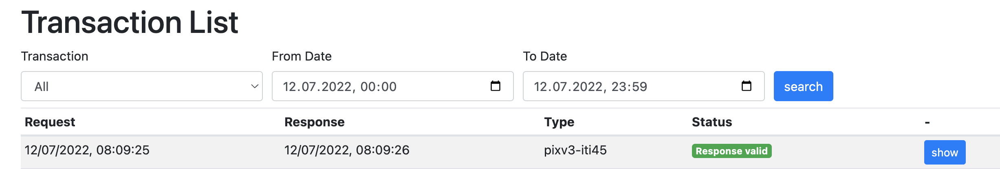

EPRIK Configuration
The EPR Integration Kit is available at https://test.ahdis.ch/eprik-cara/.

By default it lists all transactions made during the day. You can filter by IHE transaction type or time range.
EPR Endpoints
That the requests are routed through EPRIK the following endpoints need to be configured in your primary system for EPRIK instead of CARA INT for an EPR integration:
| Transaction | EPRIK |
|---|---|
| Host | test.ahdis.ch |
| Port | 443 (https) or 80 (http) |
| XDS [ITI-18] | /eprik-cara/camel/cara/Registry/services/RegistryService |
| XDS [ITI-18] Initiating Gateway | /eprik-cara/camel/cara/XCA/services/InitiatingGatewayService |
| XDS [ITI-41] | /eprik-cara/camel/cara/Repository/services/RepositoryService |
| XDS [ITI-43] | /eprik-cara/camel/cara/Repository/services/RepositoryService |
| XDS [ITI-43] Initiating Gateway | /eprik-cara/camel/XCA/services/InitiatingGatewayService |
| XDS MU [ITI-57] | /eprik-cara/camel/cara/Registry/services/RegistryService |
| XDS RMU [ITI-92] | /eprik-cara/camel/cara/Registry/services/RegistryService |
| XDS-I RAD [ITI-69] | /eprik-cara/camel/cara/Repository/services/RepositoryService |
| PIX V3 [ITI-44] | /eprik-cara/camel/cara/UPIProxy/services/PIXPDQV3ManagerService |
| PIX V3 [ITI-45] | /eprik-cara/camel/cara/UPIProxy/services/PIXPDQV3ManagerService |
| PDQ V3 [ITI-47] | /eprik-cara/camel/cara/UPIProxy/services/PIXPDQV3ManagerService |
| HPD [ITI-58] | /eprik-cara/camel/cara/HPD/services/HPDService |
| HPD [ITI-59] | /eprik-cara/camel/cara/HPD/services/HPDService |
| CH:PPQ [PPQ-1] | /eprik-cara/camel/cara/HPD/services/PR |
| CH:PPQ [PPQ-2] | /eprik-cara/camel/cara/HPD/services/PR |
| XUA [ITI-40] | /eprik-cara/camel/cara/STS/services/SecurityTokenService |
| TCU SAML2 | /eprik-cara/camel/tcu |
| ATC [ITI-81] | /eprik-cara/camel/cara/ARR/fhir/AuditEvent |
| ATNA [ITI-20] |
atna.test.ahdis.ch:8080 or :80 (currently 37.156.40.86) unsecured TCP according to RFC5425 |
| SVS [ITI-48] | /eprik-cara/camel/cara/ValueSetRepository/services/ValueSetRepositoryService |
| SVS [ITI-60] | /eprik-cara/camel/cara/ValueSetRepository/services/ValueSetRepositoryService |
You find an overview of the current relevant specifications and the associated links for the Swiss Electronic Patient Record EPR also here and in the Post E-Health Platform – developer portal.
transferts (TRA) Endpoints
That the requests are routed through EPRIK the following endpoints need to be configured in your primary system for EPRIK instead of CARA INT for an transferts integration:
| Transaction | EPRIK |
|---|---|
| Host | test.ahdis.ch |
| Port | 443 (https) or 80 (http) |
| TRA PIX V3 [ITI-44] | /eprik-cara/camel/tra/PIXPDQ/services/PIXPDQV3ManagerService |
| TRA PIX V3 [ITI-45] | /eprik-cara/camel/tra/PIXPDQ/services/PIXPDQV3ManagerService |
| TRA HPD [ITI-58] | /eprik-cara/camel/tra/HPD/services/HPDService/ |
| TRA HPD [ITI-59] | /eprik-cara/camel/tra/HPD/services/HPDService/ |
| TRA STS [ITI-40] | /eprik-cara/camel/tra/b2bsts/SecurityTokenService/ |
| TRA TCU STS | /eprik-cara/camel/tra/2000040030829 |
| TRA submitDocuments* | /eprik-cara/camel/tra/rcdc/SourceAdaptor/ |
| TRA GetDocumentList* | /eprik-cara/camel/tra/rcdc/Rcdc/ |
| TRA XDS [ITI-18]* | /eprik-cara/camel/tra/Registry/services/RegistryService |
| TRA XDS [ITI-41]* | /eprik-cara/camel/tra/Repository/services/RepositoryService |
- Webservice call needs STS token
PMP Endpoints
That the requests are routed through EPRIK the following endpoints need to be configured in your primary system for EPRIK instead of CARA INT for a PMP integration for the following XDS transactions:
| Transaction | EPRIK |
|---|---|
| Host | test.ahdis.ch |
| Port | 443 (https) or 80 (http) |
| XDS [ITI-18] | /eprik-cara/camel/pmp-int/pmp/services/xds/iti18 |
| XDS [ITI-41] | /eprik-cara/camel/pmp-int/pmp/services/xds/iti41 |
| XDS [ITI-43] | /eprik-cara/camel/pmp-int/pmp/services/xds/iti43 |
| XDS MU [ITI-57] | /eprik-cara/camel/pmp-int/pmp/services/xds/iti57 |
| CMPD [PHARM-1] | /eprik-cara/camel/pmp-int/pmp/services/cmpd/chpharm1 |
The other PMP host is available at the path /eprik-cara/camel/pmp-dev/pmp/...; see
https://cara-ch.github.io/emed-service-guide/endpoints/ for more details.
External validation
The EPRIK can use the Swiss EVS Client validator to validate various transactions and resources (like XUA assertions and ATNA messages). Due to limited resources and rate limiting, the external validation is disabled by default. You can enable it for a specific client in the Clients table. It will stay enabled for 8 hours and will be disabled automatically.
If the external validation is not enabled, a warning will be shown in the Validation part of the transaction details.